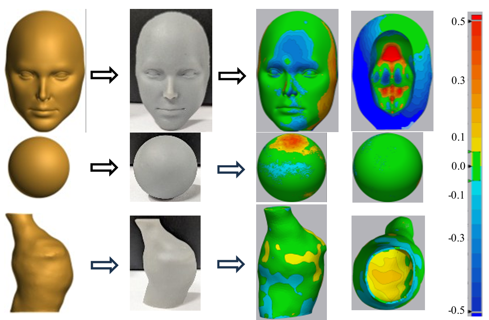
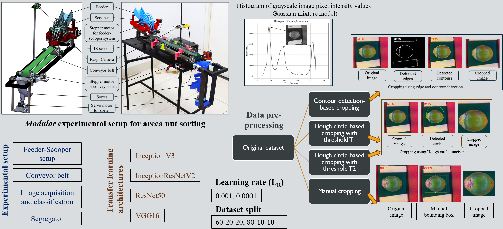
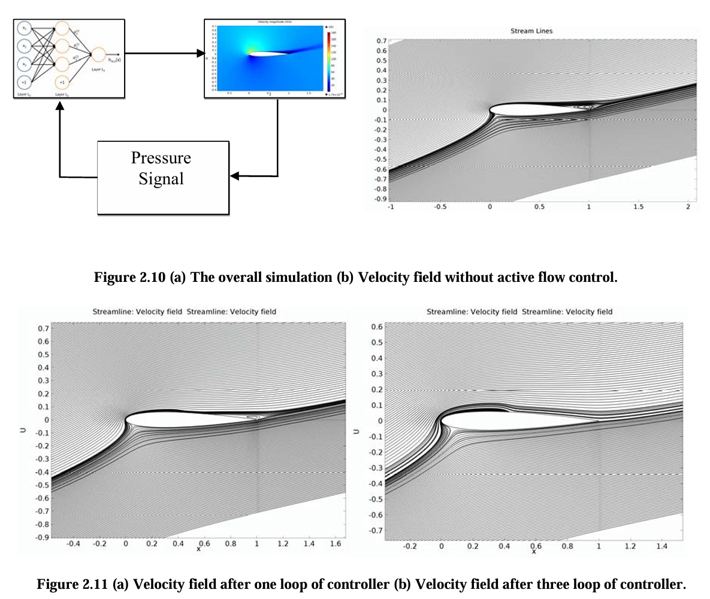

Output
Publications
Journal papers · Conference proceedings · Preprints
Journal Papers
Statistical Distributions of Voxel Grid Resolution Induced Surface Deviations in Marching Cube-Based 3D Reconstructed Regular Smooth Geometries
Characterises statistical distributions (generalised gamma identified as best-fit via MLE + AIC/BIC/CvM) of voxel-resolution-induced surface errors across 9 geometries.
Influence of Geometry, Class Imbalance and Alignment on Reconstruction Accuracy — A Micro-CT Phantom-Based Evaluation
Validates reconstruction pipeline on micro-CT printed phantoms; studies effect of class imbalance and alignment on Dice, Jaccard, and Hausdorff metrics.
🔗 View on arXiv3D Bioprinting in Disease Modeling: Integrating Mechanical and Clinical Cues for Physiologically Relevant Systems
Conference Papers & Presentations
{kind=link}

Error Assessment in Image-Based 3D Reconstruction and 3D Printing
Evaluates geometric fidelity in the pipeline from image-based 3D reconstruction to physical 3D printing. Proposes metrics and comparison frameworks to identify error accumulation.
📄 View PDF{kind=link}

Transfer-Learning Based Multi-Class Areca Nut Image Classification
Deep learning model leveraging transfer learning to classify areca nuts under varied lighting conditions using a conveyor-based imaging system.
📄 View PDF{kind=link}

Active Flow Control Using Synthetic Jets and Neural Network
Flow control experiments using synthetic jets, enhanced by neural network models to predict and adapt control strategies. Validated through wind tunnel experiments.
📄 View PDF